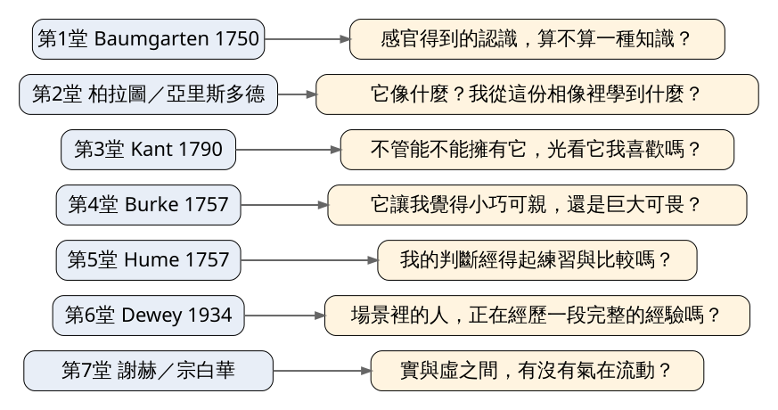
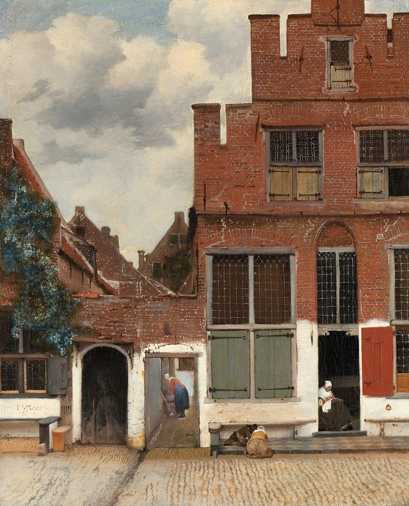
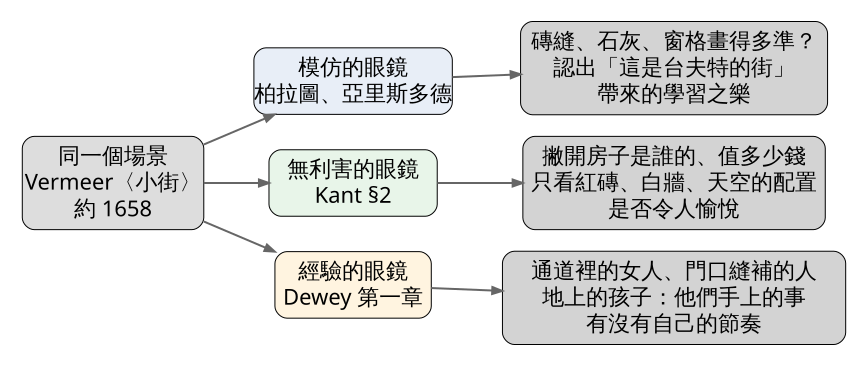

前七堂各給了你一副看東西的眼鏡。今天只挑其中三副：柏拉圖與亞里斯多德的模仿論、Kant 的無利害、Dewey 的經驗論，輪流戴上，看同一個場景。主例是 Vermeer 約 1658 年畫的一條台夫特小巷，對照的是 John Cage 1952 年首演的〈4'33"〉。今日練習 30 分鐘，在你家附近找一個每天經過的地方，替它寫三份不一樣的筆記。
史料（Rijksmuseum 典藏說明；CODART 2015 年報導） 2015 年 11 月 19 日，阿姆斯特丹大學藝術史教授 Frans Grijzenhout 宣布，他找到 Vermeer〈小街〉畫的是哪裡：台夫特的 Vlamingstraat，今天門牌 40 號與 42 號的位置。這張畫只有 54.3 × 44 公分，畫兩棟房子和兩條窄通道，沒有教堂，也沒有廣場可以拿來比對地標。
Grijzenhout 靠的是一份枯燥的檔案：1667 年的《Register op het kadegeld》，碼頭稅登記簿。台夫特為了疏浚運河，把沿岸每一棟房子、每一條通道的寬度都登記下來，誤差大約 15 公分。畫中兩棟房子各寬約 6.3 公尺，旁邊兩條通道各寬約 1.2 公尺。他再拿房子後方的院子與花園去核對，全城只有一處對得上。
登記簿還帶出一個人。依 Rijksmuseum 的說明，畫面右邊那棟房子住著 Vermeer 的姑姑 Ariaentgen Claes，她大約從 1645 年帶著孩子住在這裡，直到 1670 年過世。CODART 的報導補上細節：她是 Vermeer 父親同父異母的姊妹，守寡後靠賣牛肚養活五個孩子，屋旁的通道因此叫 Penspoort，意思是「牛肚門」。
一張掛在荷蘭國家博物館的名畫，畫的是畫家姑姑家門口，一個賣牛肚的寡婦每天進出的巷子。今天就拿這條巷子來練習。
前七堂的七個問題 先把前面七堂濃縮成七個可以帶在身上的問題（見圖 1）。它們問的方向不同，有的問作品像不像，有的問你喜不喜歡，有的問做事的人過得怎麼樣。今天練習的重點，是發現同一個場景換了問題就會變成不同的東西。

圖 1｜第一單元七堂課各自留下的一個問題。本課程依 Baumgarten《Aesthetica》（1750）、柏拉圖《理想國》卷十、亞里斯多德《詩學》、Kant《判斷力批判》（1790）、Burke《論崇高與美》（1757）、Hume〈論品味的標準〉（1757）、Dewey《Art as Experience》（1934）、謝赫《古畫品錄》與宗白華《美學散步》（1981）繪製。授權：本課程自製圖解，來源頁面（課綱）
經典理論｜第一副眼鏡：模仿（柏拉圖《理想國》卷十；亞里斯多德《詩學》第四章）
柏拉圖在卷十裡擺出三張床：神造的那張只有一張，是床本身；木匠照著它做出一張；畫家再照著木匠那張畫出一張。畫家畫的只是木匠那張床從某個角度看過去的樣子，所以柏拉圖說畫家「thrice removed」，離真實隔了三層。亞里斯多德的立場比較寬容。他說人從小就愛模仿，看到屍體或最卑賤的動物，現實中會不舒服，畫得精確卻讓人愉快，因為看圖的人一邊看一邊推論「這就是那個」，而學習本身就是快樂。
戴上這副眼鏡，你問的是：它像不像？我從這份相像裡認出了什麼？它只給了我哪一個側面？
經典理論｜第二副眼鏡：無利害（Kant《判斷力批判》§2，1790；依 J. H. Bernard 英譯，1914 年修訂版）
Kant 在 §2 舉了一座宮殿。有人問我眼前那座宮殿美不美，我可以回答：我不喜歡只蓋來給人看的東西。我也可以學那位到過巴黎的易洛魁酋長，說整座城市最讓他滿意的是小吃館。我還可以學盧梭，責備權貴拿人民的汗水去蓋這種多餘的建築。我甚至可以說，要是流落荒島，只要有間舒服的小屋，就算許個願就能變出這座宮殿，我也懶得許。
Kant 說這些回答都可以成立，只是答非所問。問一件東西美不美，問的是光看它的樣子，我心裡有沒有愉悅；這東西存不存在、屬不屬於我、有沒有用，都不相干。他把跟「想要這東西存在」綁在一起的滿足叫作利害（interest），並說只要摻進一點利害，就不是純粹的鑑賞判斷。
戴上這副眼鏡，你問的是：撇開想不想要、值不值錢、是誰的，光看它的形狀與顏色，我喜歡嗎？
經典理論｜第三副眼鏡：經驗（Dewey《Art as Experience》1934，第一章〈The Live Creature〉）
Dewey 主張，想懂美感，要先從它的原始狀態看起。他列出街上吸住人群的景象：消防車呼嘯而過，挖土機在地上挖出大洞，工人坐在高空鋼樑上拋接燒紅的鉚釘。他也寫到照顧盆栽的主婦，以及撥弄壁爐柴火的人。撥火的人會說自己是為了讓火燒旺，可是他同樣被火焰竄動、炭塊崩落那場變化吸住，在想像裡參與其中，不是冷眼旁觀。
戴上這副眼鏡，你問的是：場景裡的人（包括你自己）正在做的事，有沒有自己的起伏，有沒有一步步走向完成？
三副眼鏡問的是三件事：作品和世界的關係、觀者的愉悅從哪裡來、做事的人怎麼過這段時間。圖 1 裡另外四副，Baumgarten 的感性認識是這整套練習的前提，Burke、Hume、宗白華則留給練習的加分題。
史料｜Johannes Vermeer，〈小街〉（Gezicht op huizen in Delft, bekend als 'Het straatje'），約 1658，油彩、畫布，54.3 × 44 公分，Rijksmuseum 藏（SK-A-2860）

圖 2｜Johannes Vermeer，〈小街〉，約 1658，Rijksmuseum, Amsterdam。授權：Public domain（PD-Art／PD-old-100-expired；Public Domain Mark 1.0），來源頁面
先把畫裡的東西點一遍（見圖 2）。右半邊是一棟紅磚房的正面，頂端是階梯狀的山牆，下半截牆刷成白色。左邊是較矮的屋頂，牆上爬著一叢綠色植物，左上角留給天空與雲。底部有兩個門洞：左邊一個拱門關著，中間一條通道開著，一個女人在通道深處彎身對著一個桶子。右邊門口坐著一個低頭做手工的女人，門前石板上有兩個孩子蹲著玩。左下角的白牆上有簽名。
戴上模仿的眼鏡 這副眼鏡先看準確度。磚縫、窗格的鉛條、白牆上剝落的灰泥，一處處畫得清楚。亞里斯多德說的「認出這就是那個」的快樂，在 2015 年真的發生了一次：Grijzenhout 拿著登記簿，認出畫裡的兩棟房子和兩條通道就是 Vlamingstraat 的那一段。柏拉圖的提醒也派得上用場。畫只給了房子朝街的這一面，看不到屋後；Grijzenhout 要確認地點，還得去查畫裡沒有的後院與花園。畫給的始終是一個側面。
戴上無利害的眼鏡 現在把故事放下。房子是誰的、牛肚生意好不好、碼頭稅繳多少，Kant 會說都不相干。剩下的是配置：右邊一大塊紅磚，左上一塊明亮的天空，兩者沿著一條斜線分開；一條白色牆基橫過整個畫面底部，把兩棟房子連在一起；白牆上幾個黑色門洞隔開排列，右邊門旁一片紅色窗板，是白牆上最鮮的一點顏色。這個練習有點反諷：故事引入讓你更想看這張畫，Kant 會提醒你，那份「更想看」有一部分是好奇心，算在利害那一邊。
戴上經驗的眼鏡 畫裡的人沒有一個在擺姿勢。通道裡的女人在桶邊忙，門口的女人低著頭做手工，孩子專心玩地上的東西。用 Dewey 的眼光看，這條巷子最值得看的是這些手上正在進行的事，每一件都有開頭，也會做完。對照史料：這是一個寡婦靠賣牛肚撐起的家，巷子是她每天工作進出的地方。畫裡的人是不是她，沒有文獻可以確認。
三副眼鏡看完，同一條巷子留下三份筆記（見圖 3）。

圖 3｜三副眼鏡看〈小街〉各自注意到的東西。本課程依柏拉圖《理想國》卷十、亞里斯多德《詩學》第四章、Kant《判斷力批判》§2 與 Dewey《Art as Experience》第一章繪製。授權：本課程自製圖解，來源頁面（作品資料）
史料（依二手文獻：Nick Richardson，〈Rain, Blow, Rustle〉，London Review of Books 32 卷 16 期，2010，評 Kyle Gann《No Such Thing as Silence: John Cage's 4'33"》，Yale University Press，2010）
1952 年 8 月 29 日晚上，鋼琴家 David Tudor 在紐約州 Woodstock 附近的 Maverick Concert Hall 首演 John Cage 的〈4'33"〉。這座音樂廳是一棟蓋在林子裡、像穀倉一樣的木造建築。Tudor 坐下，闔上琴蓋，靜坐約半分鐘，打開，再闔上；過了兩分多鐘，又開闔一次。全曲三個樂章，他只用琴蓋標出段落，一個音也沒彈。聽眾聽見的是風吹過楓樹，雨落在木頭屋頂上，接著是竊竊私語，有人開始往出口移動。事後還有一位當地藝術家高喊，要把這群人趕出鎮去。
拿三副眼鏡來聽這四分半鐘。模仿的眼鏡在這裡失靈：這首曲子什麼都沒模仿，風聲雨聲都是真的。無利害的眼鏡反而好用：雨聲對你沒有用處，你也沒辦法擁有它，能問的只剩下聽起來喜不喜歡。經驗的眼鏡聽到的是整個廳裡的人，那段不耐、竊語、起身離開，也是這四分半鐘的一部分。Gann 這本書的書名取自 Cage 後來的說法：沒有寂靜這回事。
〈4'33"〉的樂譜仍受著作權保護，這裡不放圖。紐約現代藝術博物館（MoMA）藏有一份早期手稿樂譜，可在 MoMA 典藏頁面查看。
誤解一：三副眼鏡裡只有一副是對的 Kant 在 §2 自己承認，酋長、盧梭、荒島上的人的回答都可以成立，只是回答了另一個問題。三副眼鏡回答三個不同的問題，用哪一副，看你想知道什麼。
誤解二：「無利害」就是沒興趣、冷淡 Kant 說的利害，指跟「想要這東西存在」綁在一起的滿足。無利害的判斷仍然有愉悅，只是那份愉悅不靠擁有或使用。看一場雨看得入神，跟對雨毫無感覺，是兩回事。
誤解三：Dewey 說什麼都是藝術 第一章談消防車、撥火的人，是要指出美感的原始狀態，從那裡去理解完成形態的藝術。他把這些日常景象當作藝術的來源，沒有說它們就是藝術品。
誤解四：查到地點，就證明〈小街〉是照實描下的街景 2015 年的比對靠的是房子與通道的寬度和配置，證明的是地點。畫裡的光線、人物、磚牆細節是否照實畫下，那份登記簿回答不了。
單元練習，總長 30 分鐘。準備手機與一張紙，紙上先畫三欄：模仿、無利害、經驗。
看（5 分鐘） 選一個你每天經過、平常不會多看一眼的場景：早餐店門口、菜市場的一個攤位、公寓的樓梯間、自家廚房。站定五分鐘，先不拍照，只在紙的空白處列出看到的人、物件和聽到的聲音，越多越好。
做（20 分鐘） 同一個場景做三輪，每輪 5 分鐘，最後 5 分鐘做加分題。
回顧（5 分鐘）
來源 | 來源類型 | 查核日期 |
史料 | 2026-11-04 | |
史料 | 2026-11-04 | |
圖片授權 | 2026-11-04 | |
經典理論 | 2026-11-04 | |
經典理論 | 2026-11-04 | |
Kant《Critique of Judgement》§2，J. H. Bernard 英譯（1892；1914 修訂版），Project Gutenberg #48433 | 經典理論 | 2026-11-04 |
John Dewey《Art as Experience》（1934）第一章〈The Live Creature〉掃描本 | 經典理論 | 2026-11-04 |
史料（依二手文獻） | 2026-11-04 |
延伸閱讀：Kant《判斷力批判》§2 只有一頁多，宮殿那一段可以配著今天的練習二讀；Dewey 第一章開頭三頁就是消防車與撥火的人；想知道〈4'33"〉首演前後的完整經過，可讀 Kyle Gann《No Such Thing as Silence》第一章。